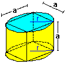
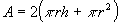
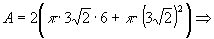
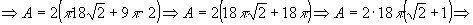
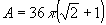

Item 16
 | O cilindro em questão está representado na figura ao lado. |
| A área de um cilindro circular reto é dada por:

|
Observe, na figura, que uma base do cilindro é justamente uma circunferência circunscrita à face do cubo; portanto o raio de uma base deste cilindro é o raio da circunferência dada pela questão:

A altura, h, do cilindro é igual a altura do cubo, ou seja: h = a
Mas pelo item 01: a = 6 cm
Logo: h = 6 cm
Substituindo os valores de h e r na fórmula da área do cilindro:


 |
Conclusão: O item 16 é falso.
 Voltar
Voltar